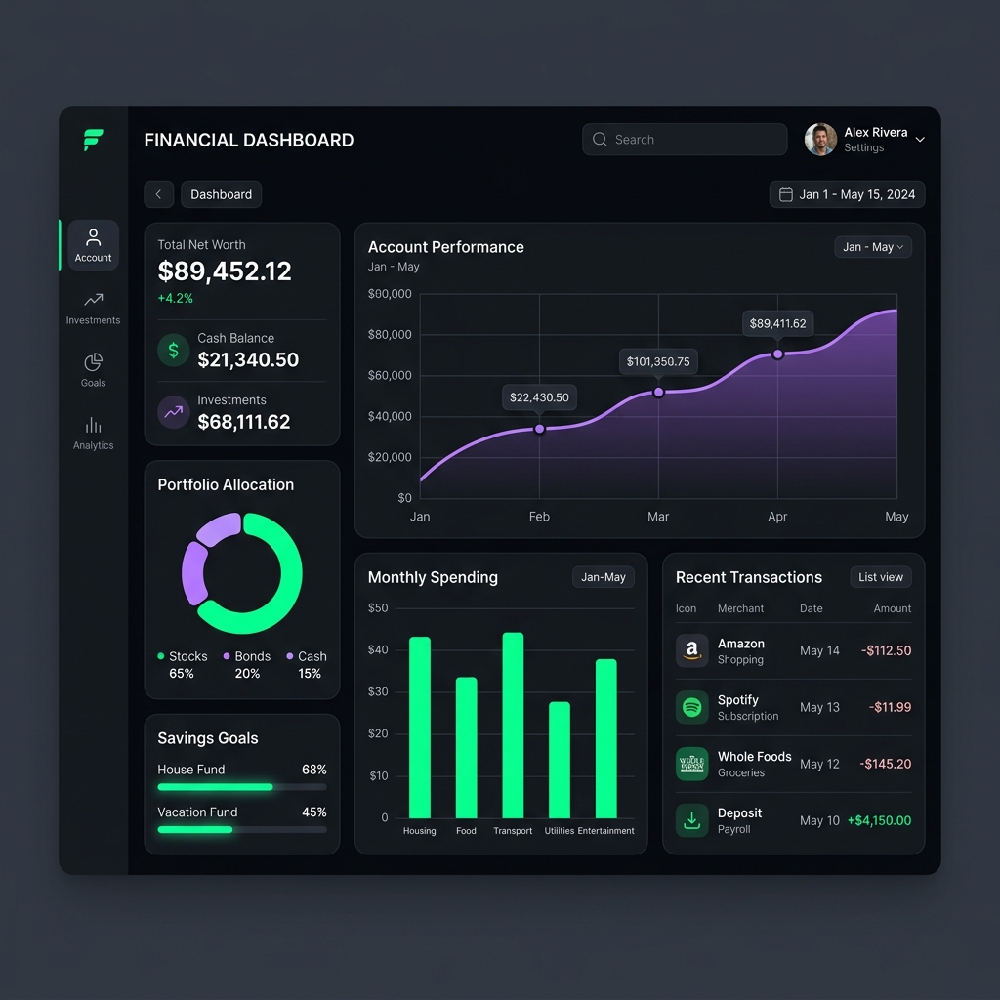

A comprehensive, full-stack personal finance application designed to help users track expenses, manage budgets, and achieve savings goals seamlessly.

BudgetBuddy solves the problem of scattered financial tracking by providing a unified platform with intelligent predictive insights, real-time alerts, and automated monthly reporting.
It goes beyond simple transaction logging, acting as an AI-powered financial assistant that actively helps users understand their spending habits and reach their financial goals faster.
Enables custom budgets with real-time proactive alerts when spending limits are approached or exceeded.
Allows users to create savings targets and utilizes predictive logic to forecast completion timelines based on historical data.
An integrated chatbot powered by Groq (LLaMA 3.1) that provides contextual financial advice and insights.
Generates custom, downloadable PDF reports with embedded charts comparing monthly financial metrics.
Client-Server Architecture: The application uses a decoupled structure where a React Native (Expo) frontend communicates with a robust RESTful Node.js backend. The Node.js backend strictly adheres to the Model-View-Controller (MVC) pattern, ensuring clean separation of concerns.
Engineering Complexity: Generating dynamic PDF reports with embedded visuals (Chart.js + Canvas on a Node server) posed a significant challenge. Additionally, integrating the Groq LLM required constructing highly optimized prompt engineering pipelines to feed user context securely and with ultra-low latency.